开了7年混动后投向纯电9个月，一个中年新能源车主的生活有了哪些新变化？
一、更愿意开车了
几乎每天都会开，而且一点也不排斥，有时候停好车还不由自主的回头看看， 最明显的表现是下面三个：
① 送娃上学方式的改变
- 之前：小电驴为主，下雨天或冬天才开车
- 现在：每天都是开车，准备好之后直接乘电梯到车库
② 每月里程增加不少
目前开得最多的一个月是 7 月份，跑了好几个长途，今天的预计里程估计在 22000km 左右。

提车以来，已经自驾去过的地方有：（按距离远近排列）
苏州、昆山、嘉兴、杭州、桐庐、 合肥、 安庆、淮北、厦门、珠海……
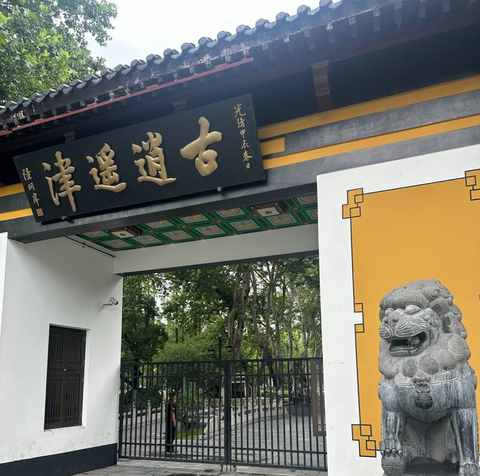
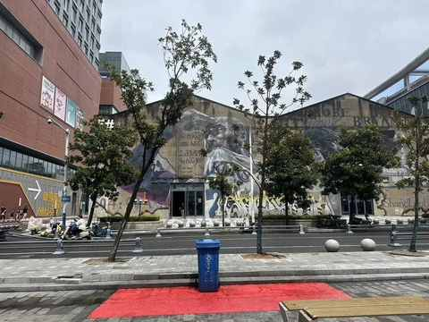
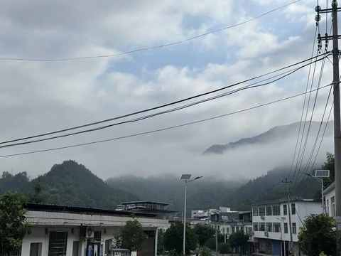
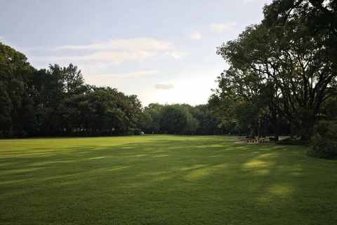
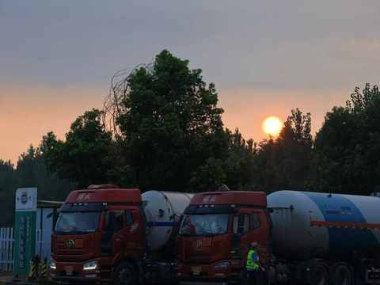
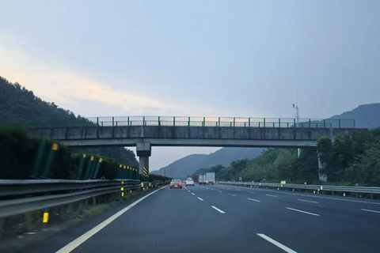
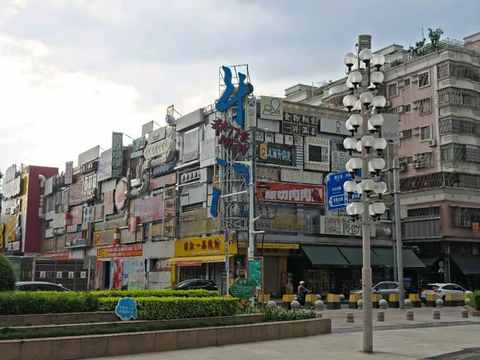
③ 补能更方便
长途出行，能做到说走就走，只需 晚上把充电枪插上，早上就能满电出发！
加油虽然快，但必须去固定位置，整体体验并不好，特别是加油站的汽油味很重，纯电车的 补能方式从 集中式逐步变成了分布式的了，灵活度高了很多。
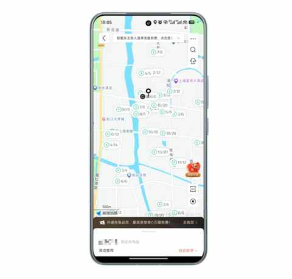
即使没有家充，现在充电站多的都数不过来了，各种价格、快充、慢充的都根据自身需求去灵活选择。
二、用车体验提升明显
在没有换纯电车之前，对于各家宣传的体验部分仅自行能想象，然后再结合看的一些自媒体博主的事情去对应到自身的用车场景。
但想象也仅仅是想象，只有开始用新车之后才能真切感受到多方面体验的升级，用了就回不去了！
① 更好的静谧性
纯电车的静谧性可能也是纯电车主对车辆的声音更敏感的原因，因为发动机只要一启动，这个声音就无法忽略，电机的声音友好太多。
对驾驶员对直接的好处可能是想听歌的时候，声音不用开很大，不想听歌想静一静的时候也能不被周围的声音所干扰。
② 更全面的配置
谈一个在冬天感受颇深的小细节：
提车的时候是12 月底，已经需要穿羽绒服，早上送娃上学的时候手刚握到方向盘上，发现方向盘是暖的，当时的感受不亚于在雪地里面喝了一大口热茶，暖暖的。
另外一个是在夏天印象深刻的小细节：
通过 APP 提前开空调的时候发现，居然也能调节座椅通风，然后开启空调的同时也开启了全车的座椅通风。
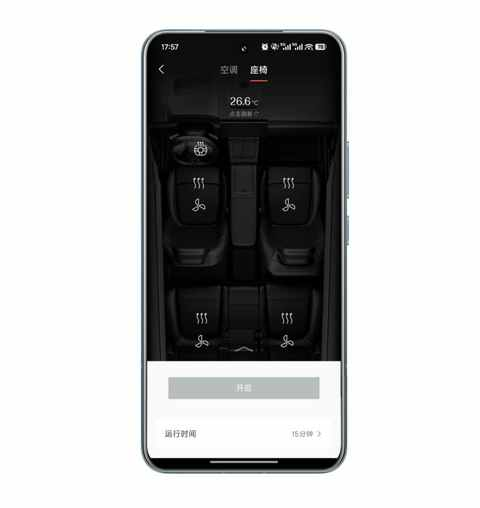
之前的车夏天提前开启空调后，进到车里面身体是感受到凉爽了，但是屁股接触的座椅还是热，现在完全不用担心再出现这个情况。
③ 辅助驾驶真省力
在没有用辅助驾驶之前，虽然也看过一下测评和车主的分享，但并不觉得有多么刚需多么厉害，打心里认为还是自己开更靠谱。
果然，人教人不如事教人，一次高速长途之后我便改变了想法和观念：辅助驾驶是真省力，能让高速长途出行不那么累。
因为那次600km的长途开下来我并不累，之前的车没有辅助驾驶，连续开七八个小时虽然体力上不用付出很多，但是身体是累的，腰、胳膊、右腿会有点酸。
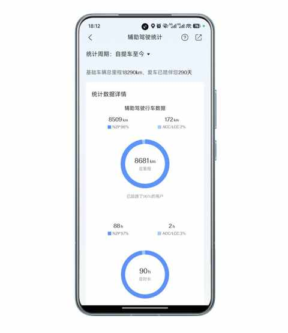
合理的使用辅助驾驶，能大大减轻这种疲惫感，能比较轻松的日行千里。
现在依然是主要在高速使用辅助驾驶，日常短途出行都是自己开，估计大部分车主都和我类似情况吧。
日常短途出行自己开的体验会更好一点，也期待辅助驾驶继续进化让我在日常短途出行的时候也想开启。
三、大大缓解中年危机
中年危机，是一种既迷茫又不迷茫的纠结状态，和以往人生中的每个阶段都不一样，完全 是 全新的体验。
① 中年人必经的状态
20 多岁的时候，刷各个平台的内容，能经常看到一些关于中年危机的信息，那时候并不好点进去看，我还年轻呢看这些干啥。
过了 30 岁之后，再刷到相关内容每10 条内容得有 2-3 条会点击查看具体讲什么，但也不会太当真。
直到越来越趋近于 35 岁，再到现在已经过 35 岁生日 7 个月，中年危机已经在自己身上具象化。
② 中年人需要变量
专属于我的变量，应该就是把用了 7 年的混动车换成了纯电车，虽然都是新能源车的范畴，但两者确实有一些不同。
因为变量的介入，我的生活也有了一点点变化，物质层面上需要因为换车而新买一些装备，同时在精神层面上也要学习一些新的用车知识。
③ 中年人解锁新体验
首次长距离自驾，一家三口从上海开到珠海，途中在服务区充电，然后在车上过夜，第二天一早洗漱好再出发。
过夜的时候我和老婆在主副驾，娃在后排。
整体能耗尚可，由于是在暑期非节假日，路途中充电也很方便。
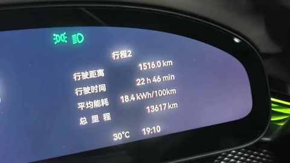
自这次自驾之后，对距离的感知忽然友好了许多，之前会觉得单程 600km 已经很远，现在觉得 1000km 才是。
④ 拓展边界的好工具
《好汉歌》里面有一句歌词是：“说走咱就走啊，风风火火闯九州啊！”。
这首影视热门歌曲的歌词就这句我记到现在，每次都能联想到水浒的英雄好汉们的肆意与洒脱。
说一句说走就走的口号很容易，实际做到很不容易。
不过，今年我突破了，做到过两次：
第一次是在上海约朋友吃饭
我开车从松江到浦东找他，然后开车去苏州姑苏区的商场吃一家东北菜馆，往返 270km。
当时和朋友说去苏州吃饭的时候，他愣了一下，我和他说是在微博上看到一个博主分享的，然后被种草了。到地方之后吃的很爽，没想到小鸡炖蘑菇里面的粉条辣么好吃，也是难得我们两个人都吃撑了。
第二次是从老家到合肥吃饭
和在合肥工作的邻居吃午饭聊聊天，往返400km，我还顺道去万象城的书店买了两本书作为礼物，唯一的不完美的是对万象城不熟悉，找书店花了点时间，出去的时候超时了需要付停车费。
当时吃饭的时候，邻居也问我是不是去合肥办事的，下午怎么安排，我说只是过来吃饭聊了的没有其他事情， 他也愣了一下。
放在去年，这两件事可能都不会做，会觉得过于折腾会觉得成本过高，但今年我有了一个好的工具。
一个好的工具不需要尽善尽美，但一定会对事情有所促进，有积极意义。
四、结语
纯电车于我而言最大的意义是在于：让我的开启一件事情的成本变低！
把距离换算成时间和精力的投入之后会发现比之前低很多，所以我便能在偶尔能不那么瞻前顾后，变得果断。
希望所有中年人在每年都有 1-2次的说走咱就走！
近期文章：
车型太多，普通人怎么选新能源车？分享一个更符合普通人的选车方法！
弯路没少走！8年新能源车主的真心话：这10件车载好物，日常用车真的离不开！
被一条留言击中，然后开始不由自主的“胡思乱想”
开了7年混动后，我为何最终投向纯电？一位车主的心路历程
写给中年人的，低成本跑步入门（入坑）指南
35岁农村沪漂的“顿悟”：那些没人明说的5个感受
国庆假期第一天，三个沪漂中年男人的饭局
作为一名上海郊区小学生的家长，我超爱每周仅一天的 “无作业日”！
哪个瞬间让你猛然意识到：自己真的结婚了？
一个中年男人为什么坚持用自行车接娃放学……